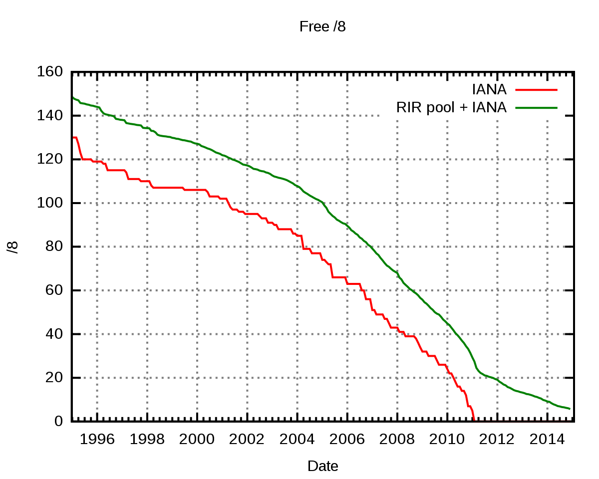

A hálózati címfordítás*
| 
A hálózati címfordítás (angolulNetwork Address Translation, röviden NAT) a csomagszûrõ tûzfalak, illetve a címfordításra képes hálózati eszközök (pl. router) kiegészítõ szolgáltatása, mely lehetõvé teszi a belsõ hálózatra kötött gépek közvetlen kommunikációját tetszõleges protokollokon keresztül külsõ gépekkel anélkül, hogy azoknak saját nyilvános IP-címmel kellene rendelkezniük. Címfordításra akár egyetlen számítógép is képes, így valósítható meg például az internet-kapcsolat megosztás is, amikor a megosztó gép a saját publikus címébe fordítja bele a megosztást kihasználó kliens gép forgalmát. Az egész címfordítás témaköre abból az igénybõl nõtte ki magát, hogy az IPv4 tartománya viszonylag kevés, 232=2564, azaz 4 294 967 296 db egyedi IP címet tesz ki. Ebben persze benne van az összes broadcast cím és a külsõ hálózatra nem route-olható belsõ címtartományok is, tehát az interneten globálisan használható címek összessége így még kevesebb. A gépek hálózati kártyái egynél több címet is felvehetnek egyszerre ha kell, illetve nemcsak a számítógépeknek, hanem szinte az összes fontosabb hálózati eszköznek is szüksége van legalább egy címre. Belátható, hogy így a soknak tûnõ 4 milliárd cím világviszonylatban már sajnos kevés. |
|
|---|---|
| Az IPv4 címek fogyása | |
Mûködése
A hálózati címfordító a belsõ gépekrõl érkezõ csomagokat az internetre továbbítás elõtt úgy módosítja, hogy azok feladójaként saját magát tünteti fel, így az azokra érkezõ válaszcsomagok is hozzá kerülnek majd továbbításra, amiket – a célállomás címének módosítása után – a belsõ hálózaton elhelyezkedõ eredeti feladó részére ad át. Ebbõl kifolyólag ez minden esetben egy aktív hálózati eszközt igényel, amely folyamatosan figyeli az érkezõ csomagokat és azok feladói és címzettjei alapján elvégzi a szükséges módosításokat. Ez többnyire egy tûzfal, amely megfelelõen szétválasztja a külsõ internetet a belsõ hálózattól. Innen származik a terminológia is: a külsõ, illetve belsõ hálózat fogalma. A belsõ hálózatnak olyan címtartományt kell adni, amelyet minden hálózati eszköz a nemzetközi szabványoknak megfelelõen belsõnek ismer el, és így azokat nem irányítja közvetlenül a külsõ hálózat felé. A belsõ címeket az alábbi táblázat mutatja be:
| RFC 1918 | IP címtartomány | egyedi címek száma |
|---|---|---|
| 24-bit block | 10.0.0.0 – 10.255.255.255 | 16 777 216 |
| 20-bit block | 172.16.0.0 – 172.31.255.255 | 1 048 576 |
| 16-bit block | 192.168.0.0 – 192.168.255.255 | 65 536 |
A címfordítás segítségével megoldható, hogy akár egy egész cég teljes belsõ hálózati forgalma egyetlen külsõ IP cím mögött legyen, azaz gyakorlatilag egyetlen külsõ címet használ el egy több száz gépes hálózat. A belsõ forgalomban természetesen szükség van az egyedi belsõ címekre, de errõl csak a címfordítást végzõ hálózati eszközöknek kell tudnia, kifelé ennek részletei már nem látható információk. Így létrejöhet olyan gazdaságos konfiguráció is, hogy egy viszonylag nagy cég teljes külsõ címfoglalása 10-20 db cím, míg a belsõ forgalmukban akár több ezer belsõ cím is lehet. Nagy elõnye ennek a technikának, hogy ugyanazt a belsõ tartományt nyugodtan használhatja bárki más is, amíg mindegyik egyedi külsõ cím mögé van fordítva, ez nem okoz zavart. Akár az összes NAT-ot használó cég belsõ hálózatában lehet minden gép a 10.0.0.0 tartományban, ha kifelé valóban egyedi címmel látszanak. Éppen a címfordítás technológiája miatt nem került gyorsabban bevezetésre az IPv6 szabvány, amely kifejlesztésének egyik oka az IPv4 fogyatkozó címtartományának kiváltása volt.